СП 254.1325800.2016 «Здания и территории. Правила проектирования защиты от произ»
О документе: разработчики, утверждение, регистрация, ключевые слова
СВОД ПРАВИЛ СП 254.1325800.2016
Издание официальное
1 ИСПОЛНИТЕЛИ -федеральное государственное бюджетное учреждение «Научно-исследовательский институт строительной физики Российской академии архитектуры и строительных наук» (НИИСФ РААСН) при участии Балтийского государственного технического университета (БГТУ «ВОЕНМЕХ»), ООО «Институт акустических конструкций», Тамбовского государственного технического университета (ТГТУ)
2 ВНЕСЕН Техническим комитетом по стандартизации ТК 465 «Строительство»
3 ПОДГОТОВЛЕН к утверждению Департаментом градостроительной деятельности и архитектуры Министерства строительства и жилищнокоммунального хозяйства Российской Федерации (Минстрой России)
4 УТВЕРЖДЕН приказом Министерства строительства и жилищнокоммунального хозяйства Российской Федерации от 17 августа 2016 г. № 571/пр и введен в действие с 18 февраля 2017 г.
5 ЗАРЕГИСТРИРОВАН Федеральным агентством по техническому регулированию и метрологии (Росстандарт)
В случае пересмотра (замены) или отмены настоящего свода правил соответствующее уведомление будет опубликовано в установленном порядке. Соответствующая информация, уведомление и тексты размещаются также в информационной системе общего пользования - на официальном сайте разработчика (Минстрой России) в сети Интернет
© Минстрой России, 2016
Настоящий нормативный документ не может быть полностью или частично воспроизведен, тиражирован и распространен в качестве официального издания на территории Российской Федерации без разрешения Минстроя России
Дата введения 2017-02-18
УДК 69+628.517.2 (083.75)
ОКС 17.140.20;91.120.20
Ключевые слова: здание, территория, производственный шум, защита, источник шума, расчет, акустические характеристики помещения, снижение шума, проектирование, строительно-акустическое мероприятие, звукоизоляция, ограждающая конструкция, звукоизолирующая кабина, звукоизолирующий кожух, звукопоглощающая конструкция, акустический экран
Руководитель организации-разработчика
«Научно исследовательский институт
строительной Физики Российской академии архитектуры
и строительных наук»
И.Л. Шубин
Руководитель разработки - директор д.т.н И.Л. Шубин
Исполнитель
главный научный сотрудник лаборатории №34 д.т.н. И.Е. Цукерников
СОИСПОЛНИТЕЛИ:
Доцент кафедры 01 «Техносферная безопасность»
БГТУ «ВОЕНМЕХ» им. Д.Ф. Устинова к.т.н. А.Е. Шашурин
Начальник испытательной лаборатории
ООО "Институт акустических конструкций" В.В. Светлов
Доцент кафедры «Архитектура и строительство зданий»
ТГТУ к.т.н. А.И. Антонов
Введение
6 ВВЕДЕН ВПЕРВЫЕ
В настоящем своде правил приведены требования, соответствующие целям Федерального закона от 30 декабря 2009 г. № 384-ФЗ «Технический регламент о безопасности зданий и сооружений» и подлежащие обязательному применению с учетом части 1 статьи 46 Федерального закона от 27 декабря 2002 г. № 184-ФЗ «О техническом регулировании». В нем развиваются и дополняются положения СП 51.13330.2011.
Свод правил разработан авторским коллективом НИИСФ РААСН (д-р техн. наук И.Л. Шубин , д-р техн. наук И.Е. Цукерников , инж. С.В. Воробьев ), БГТУ «ВОЕНМЕХ» им. Д.Ф. Устинова (канд. техн. наук А.Е. Шашурин ), ООО "Институт акустических конструкций" (инж. В.В. Светлов ), ТГТУ (канд. техн. наук А.И. Антонов).
ОТ ПРОИЗВОДСТВЕННОГО ШУМА
Buildings and territories. Rules for designing of industrial sound protection
1Область применения
Настоящий свод правил устанавливает правила выполнения акустических расчетов, подбора и размещения малошумного оборудования, а также проектирования мероприятий по снижению шума на рабочих местах в помещениях и на территории промышленных предприятий и организаций средствами строительной акустики (применением звукопоглощающих конструкций и облицовок, звукоизолирующих конструкций и пр.).
Настоящий свод правил распространяется на проектирование защиты от шума технологического оборудования в помещениях и на территории промышленных предприятий.
Настоящий свод правил не распространяется на правила расчета и проектирования звукоизоляции ограждающих конструкций зданий, защиты от шума систем вентиляции и кондиционирования воздуха.
2Нормативные ссылки
В настоящем своде правил использованы нормативные ссылки на следующие документы:
ГОСТ 12.1.003-2014 Система стандартов безопасности труда. Шум. Общие требования безопасности
ГОСТ 12.2.098-84 Система стандартов безопасности труда. Кабины звукоизолирующие. Общие требования
ГОСТ 12.4.255-2011 (ЕН 13819-1:2002) Система стандартов безопасности труда. Средства индивидуальной защиты органа слуха. Общие технические требования. Механические методы испытаний
ГОСТ 17187 -2010 (IEC 61672-1:2002) Шумомеры. Часть 1. Технические требования
ГОСТ 23941-2002 Шум. Методы определения шумовых характеристик. Общие требования
ГОСТ 27243-2005 (ИСО 3747:2000) Шум машин. Определение уровней звуковой мощности по звуковому давлению. Метод сравнения на месте установки
ГОСТ 27296 -2012 Здания и сооружения. Методы измерения звукоизоляции ограждающих конструкций
ГОСТ 27409-97 Шум. Нормирование шумовых характеристик стационарного оборудования. Основные положения
ГОСТ 30457-97 (ИСО 9614-1:93) Акустика. Определение уровней звуковой мощности источников шума на основе интенсивности звука. Измерение в дискретных точках. Технический метод
ГОСТ 30457.3-2006 (ИСО 9614-3:2002) Акустика. Определение уровней звуковой мощности источников шума по интенсивности звука. Часть 3. Точный метод для измерения сканированием
ГОСТ 30530-97 Шум. Методы расчета предельно допустимых шумовых характеристик стационарных машин
ГОСТ 30683 -2000 (ИСО 11204-95) Шум машин. Измерение уровней звукового давления излучения на рабочем месте и в других контрольных точках. Метод с коррекциями на условия окружающей среды
ГОСТ 30690-2000 Экраны акустические передвижные. Методы определение ослабления звука в условиях эксплуатации
ГОСТ 30691-2001 (ИСО 4871-96) Шум машин. Заявления и контроль шумовых характеристик
ГОСТ 31249-2004 (ИСО 14257:2001) Акустика. Построение и параметрическое описание линий пространственного распределения звука в рабочих помещениях для оценки их акустических характеристик
ГОСТ 31252-2004 (ИСО 3740:2000) Шум машин. Руководство по выбору метода определения уровней звуковой мощности
ГОСТ 31287-2005 (ИСО 17624:2004) Шум. Руководство по снижению шума в рабочих помещениях акустическими экранами
ГОСТ 31295.2-2005 (ИСО 9613-2:1996) Шум. Затухание звука при распространении на местности. Часть 2. Общий метод расчета
ГОСТ 31296.1-2005 (ИСО 1996-1:2003) Шум. Описание, измерение и оценка шума на местности. Часть 1. Основные величины и процедуры оценки
ГОСТ 31296.2-2006 (ИСО 1996-2:2007) Шум. Описание, измерение и оценка шума на местности. Часть 2. Определение уровней звукового давления
ГОСТ 31298.1-2005 (ИСО 11546-1:1995) Шум машин. Определение звукоизоляции кожухов. Часть 1. Лабораторные измерения для заявления значений шумовых характеристик
ГОСТ 31298.2-2005 (ИСО 11546-2:1995) Шум машин. Определение звукоизоляции кожухов. Часть 2. Измерения на месте установки для приемки и подтверждения заявленных значений шумовых характеристик
ГОСТ 31299-2005 (ИСО 11957-1996) Шум машин. Определение звукоизоляции кабин. Испытания в лаборатории и на месте установки
ГОСТ 31326-2006 (ИСО 15667:2000) Шум. Руководство по снижению шума кожухами и кабинами
ГОСТ Р ИСО 3741-2013 Шум машин. Определение уровней звуковой мощности и звуковой энергии источников шума по звуковому давлению. Точные методы для реверберационных камер
ГОСТ Р 52797.1-2007 (ИСО 11690-1:1996) Акустика. Рекомендуемые методы проектирования малошумных рабочих мест производственных помещений. Часть 1. Принципы защиты от шума
ГОСТ Р 52797.2-2007 (ИСО 11690-2:1996). Акустика. Рекомендуемые методы проектирования малошумных рабочих мест производственных помещений. Часть 2. Меры и средства защиты от шума
ГОСТ Р 52797.3-2007 (ИСО/ТО 11690-3:1997). Акустика. Рекомендуемые методы проектирования малошумных рабочих мест производственных помещений. Часть 3. Распространение звука в производственных помещениях и прогнозирование шума
ГОСТ Р 53376-2009 (EН ИСО 354:2003) Материалы звукопоглощающие. Метод измерения звукопоглощения в реверберационной камере
ГОСТ Р 56235-2014 Заявление и проверка характеристик изоляции воздушного шума звукоизоляционных изделий
СП 51.13330.2011 «СНиП 23-03 -2003 Защита от шума»
Примечание -При пользовании настоящим сводом правил целесообразно проверить действие ссылочных документов в информационной системе общего пользования -на официальном сайте федерального органа исполнительной власти в сфере стандартизации в сети Интернет или по ежегодному информационному указателю «Национальные стандарты», который опубликован по состоянию на 1 января текущего года,
СП 254.1325800.2016 и по выпускам ежемесячного информационного указателя «Национальные стандарты» за текущий год. Если заменен ссылочный документ, на который дана недатированная ссылка, то рекомендуется использовать действующую версию этого документа с учетом всех внесенных в данную версию изменений. Если заменен ссылочный документ, на который дана датированная ссылка, то рекомендуется использовать версию этого документа с указанным выше годом утверждения (принятия). Если после утверждения настоящего свода правил в ссылочный документ, на который дана датированная ссылка, внесено изменение, затрагивающее положение, на которое дана ссылка, то это положение рекомендуется применять без учета данного изменения. Если ссылочный документ отменен без замены, то положение, в котором дана ссылка на него, рекомендуется применять в части, не затрагивающей эту ссылку. Сведения о действии сводов правил целесообразно проверить в Федеральном информационном фонде технических регламентов и стандартов.
3Термины и определения
В настоящем своде правил применены термины с соответствующими определениями по СП 51.13330, ГОСТ Р 52797.1, ГОСТ 27409, ГОСТ 31296.1.
4Общие положения
- применение оборудования с пониженной шумностью (или ограничение шума оборудования и замена шумных технологических процессов на менее шумные);
- выполнение виброизоляции оборудования с динамическими нагрузками;
- снижение шума систем отопления, технологической и общеобменной вентиляции;
- применение комплекса строительно-акустических мероприятий.
СП 254.1325800.2016 строительным конструкциям здания (структурного шума). Передачу структурного шума в другие помещения можно снизить также ослаблением жесткости связей между источниками вибраций и строительными конструкциями здания за счет устройства разрывов в конструкциях здания и применения самостоятельных фундаментов с устройством акустических швов под оборудование с динамическими нагрузками.
В технологической части проекта до разработки строительноакустических мероприятий должны быть решены все вопросы размещения шумных объектов и оборудования.
В строительной части проекта в соответствии с технологическим заданием разрабатывают ограждающие конструкции с требуемой звукоизолирующей способностью, кабины наблюдения или дистанционного управления с необходимой звукоизоляцией, звукопоглощающие конструкции и облицовки и т. п.
Самостоятельный проект шумоглушения выполняют для объектов и оборудования, требующих разработки специальных устройств снижения шума
(глушителей на всасывании и выхлопе газодинамических установок, звукоизолирующих кожухов, экранов, виброизолирующих конструкций для технологического оборудования и т. п.).
Обоснование технических решений, обеспечивающих необходимое снижение шума, входит в проект шумоглушения или в соответствующий раздел технологической, строительной, санитарно-технической и других частей проекта.
5Характеристики звука в помещении
5.1Общие положения
5.2Определение уровней прямого звука
где LW -октавный уровень звуковой мощности источника, дБ; a пр -коэффициент, описывающий распространение прямого звука.
где -коэффициент, учитывающий влияние ближнего поля, принимаемый в зависимости от отношения расстояния r , м, от акустического центра 1) источника шума до расчетной точки к максимальному размеру источника l max, м, по таблице 1;
Таблица 1 -Коэффициент, учитывающий влияние ближнего поля
| r/l max | |
|---|---|
| 0,4 | 3,8 |
| 0,8 | 3,2 |
| 1,0 | 2,6 |
| 1,5 | 1,6 |
| 1,7 | 1,3 |
| 2 и более | 1,0 |
φ -фактор направленности источника шума (для источников с равномерным излучением φ = 1);
- S -площадь воображаемой поверхности правильной геометрической формы, окружающей источник шума, по возможности равноудаленной от его поверхности и проходящей через расчетную точку, м² , (рисунок 1);
S 0 = 1 м² .
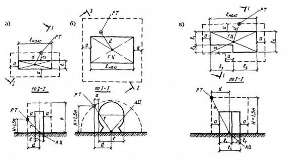
Штриховой линией обозначена воображаемая поверхность, проходящая через расчетную точку; РТ -расчетная точка; ГЦ -геометрический центр источника шума; АЦ -акустический центр источника шума; r -расстояние от акустического центра источника до расчетной точки; d расстояние от акустического центра источника до проекции расчетной точки на опорную поверхность; 𝑎 -удаление воображаемой поверхности, проходящей через расчетную точку, от огибающего источник шума прямоугольного параллелепипеда S -площадь поверхности, окружающей источник шума и проходящей через расчетную точку
Рисунок 1 -Нахождение воображаемой поверхности окружающей источник шума и проходящей через расчетную точку
\_\_\_\_\_\_\_\_\_\_\_\_\_\_\_\_\_\_\_\_\_\_\_\_\_\_\_\_\_\_\_\_\_\_\_\_\_
1) Если источник шума удален от опорной поверхности на расстояние 𝑑 и , превышающее одну треть расстояния 𝑟 1 между геометрическим центром источника шума и расчетной точкой ( 𝑑 и > 𝑟 1 /3) , акустический центр источника шума совпадает с его геометрическим центром. В остальных случаях за акустический центр, принимают проекцию геометрического центра источника шума на опорную поверхность (пол, потолок, стена, грунт). Примеры выбора акустического центра для источников шума различной формы приведены на рисунке 1.
- при r < 2 l макс S зависит от формы выбранной поверхности. Например, для прямоугольного параллелепипеда 𝑆 = 2(𝑙 макс +2𝑎)h + 2(𝑙 + 2𝑎)h + (𝑙 макс +2𝑎)(𝑙 + 2𝑎) (рисунок 1, 𝑎 ); для полуцилиндра 𝑆 = 𝜋𝑟[𝑟 + (𝑙 макс +2𝑎)] (рисунок 1,б); для поверхности более сложной формы - рисунок 1, в;
- при r ≥2 l макс S = Ω r 2 , где Ω -пространственный угол излучения, принимаемый по таблице 2.
Таблица 2 -Пространственный угол излучения источника
| Условие излучения | Ω, рад |
|---|---|
| В пространство - источник на колонне в помещении, на мачте трубе | 4 |
| В полупространство - источник на полу, на земле, на стене | 2 |
| В 1/4 пространства - источник в двухгранном углу (на полу, близко от одной стены) | |
| В 1/8 пространства - источник в трехгранном углу (на полу, близко от двух стен) | /2 |
5.3Определение акустических характеристик помещения
5.3.1 Акустические характеристики помещения:
- наименование группы, к которой относится помещение в зависимости от соотношения размеров;
- средний коэффициент звукопоглощения 0 поверхностей в помещении;
- средняя длина свободного пробега l , м, звуковых лучей в помещении между последовательными отражениями;
- средний коэффициент звукопоглощения ср в помещении;
- акустическая постоянная помещения В , м² .
- соразмерные помещения, у которых отношение наибольшего размера к наименьшему размеру не более 5;
- плоские помещения, у которых D/H > 5; G/H 4;
- длинные помещения, у которых D/H > 5; G/H < 4.
Если помещение не прямоугольное, применяют усредненные значения D, G и H, определяя их по принципу равных площадей.
где i р -реверберационый коэффициент звукопоглощения элемента поверхности площадью i S , м² ; n -число поверхностей в помещении (включая ограждающие поверхности, поверхности оборудования, мебели, людей и др.);
Аj -эквивалентная площадь звукопоглощения jго штучного звукопоглотителя, м² ; k -число штучных звукопоглотителей в помещении;
S пом -суммарная площадь поверхностей в помещении, м² .
Примечание -Реверберационые коэффициенты звукопоглощения различных поверхностей и штучных звукопоглотителей определяют по ГОСТ Р 53376. Их значения приводят в сопроводительной документации и в справочной литературе.
Значения 0 для помещений различных типов допускается принимать по таблице 3.
Таблица 3 -Средний коэффициент звукопоглощения 𝛼0 ограждающих поверхностей помещения
| Тип помещения | Коэффициент звукопоглощения 𝛼 0 в октавной полосе со среднегеометрической частотой, Гц | Коэффициент звукопоглощения 𝛼 0 в октавной полосе со среднегеометрической частотой, Гц | Коэффициент звукопоглощения 𝛼 0 в октавной полосе со среднегеометрической частотой, Гц | Коэффициент звукопоглощения 𝛼 0 в октавной полосе со среднегеометрической частотой, Гц | Коэффициент звукопоглощения 𝛼 0 в октавной полосе со среднегеометрической частотой, Гц | Коэффициент звукопоглощения 𝛼 0 в октавной полосе со среднегеометрической частотой, Гц | Коэффициент звукопоглощения 𝛼 0 в октавной полосе со среднегеометрической частотой, Гц | Коэффициент звукопоглощения 𝛼 0 в октавной полосе со среднегеометрической частотой, Гц |
|---|---|---|---|---|---|---|---|---|
| 63 | 125 | 250 | 500 | 1000 | 2000 | 4000 | 8000 | |
| 1 Машинные залы, генераторные, испытательные стенды, вентиляционные камеры, цехи предприятий пищевой промышленности с ограждениями, облицованными моющейся плиткой | 0,07 | 0,08 | 0,08 | 0,08 | 0,08 | 0,08 | 0,09 | 0,09 |
| 2 Механические и металлообрабатывающие цехи; цеха агрегатной сборки в авиационной и судостроительной промышленности | 0,10 | 0,10 | 0,10 | 0,11 | 0,12 | 0,12 | 0,12 | 0,12 |
| 3 Цехи деревообработки и предприятий текстильной промышленности, посты управления, лаборатории, конструкторские бюро, рабочие помещения управлений | 0,11 | 0,11 | 0,12 | 0,13 | 0,14 | 0,14 | 0,14 | 0,14 |
Примечание -Приведенные значения 𝛼0 относятся к соразмерным помещениям. Для несоразмерных помещений табличные значения 0 нужно увеличить в 1,4 раза - для плоских помещений; в 1,2 раза - для длинных, чтобы учесть возрастание доли пола с оборудованием в суммарной площади ограждений.
где V с.п. -объем свободного пространства помещения, м³ , определяемый как разность объема помещения и объема, занимаемого расположенными в помещении предметами (оборудование, мебель и пр.).
- в октавных полосах со среднегеометрическими частотами 63 - 1000 Гц = 0 ;
- в октавных полосах со среднегеометрическими частотами 2000-8000 Гц по формуле
где 𝛼0 - средний коэффициент звукопоглощения поверхностей в помещении, определяемый по 5.3.3; m - постоянная затухания звука в воздухе, м -1 , значения которой следует принимать по таблице 4.
Таблица 4 -Постоянная затухания звука в воздухе m , м -1 , при нормальном атмосферном давлении в зависимости от температуры и влажности воздуха в октавных полосах частот
| Температура, o С | Относительная влажность,% | Постоянная затухания звука в воздухе m , м -1 , в октавной полосе со среднегеометрической частотой, Гц | Постоянная затухания звука в воздухе m , м -1 , в октавной полосе со среднегеометрической частотой, Гц | Постоянная затухания звука в воздухе m , м -1 , в октавной полосе со среднегеометрической частотой, Гц |
|---|---|---|---|---|
| 2000 | 4000 | 8000 | ||
| 30 | 10 20 | 0,0060 0,0032 | 0,0200 0,0100 0,0063 0,0057 0,0058 | 0,0590 0,0350 |
| 40 | 0,0028 | 0,0190 | ||
| 60 | 0,0032 | 0,0150 | ||
| 80 | 0,0035 | 0,0130 | ||
| 20 | 10 | 0,0092 | 0,0250 | 0,0450 |
| 20 | 0,0044 | 0,0155 | 0,0480 | |
| 40 | 0,0025 | 0,0078 | 0,0290 | |
| 60 | 0,0022 | 0,0057 | 0,0190 | |
| 80 | 0,0022 | 0,0049 | 0,0150 | |
| 10 | 10 | 0,0100 | 0,0160 | 0,0200 |
| 20 | 0,0074 | 0,0210 | 0,0390 | |
| 40 | 0,0035 | 0,0120 | 0,0390 | |
| 60 | 0,0023 | 0,0081 | 0,0290 | |
| 80 | 0,0020 | 0,0062 | 0,0220 |
5.4Определение уровня отраженного звука
где LW -октавный уровень звуковой мощности, дБ; a отр -коэффициент, описывающий вклад отраженного звука в помещении.
- для соразмерного помещения
- для плоского помещения
- для длинного помещения
где В - акустическая постоянная помещения, м² , k - коэффициент, учитывающий нарушение диффузности звукового поля в соразмерном помещении, значения которого принимают по таблице 5 в зависимости от среднего коэффициента звукопоглощения ср в помещении;
H и G -высота и ширина помещения, м;
В 0 = 1 м² ;
𝐽(𝛼 ср , 𝜌) -функция, описывающая поле отраженного звука в несоразмерном помещении, определяемая по формуле
где -приведенное расстояние, определяемое по формуле
где l -средняя длина свободного пробега звуковых лучей в помещении, м, определяемая по 5.3.4.
Таблица 5 -Коэффициент k , учитывающий нарушение диффузности звукового поля в соразмерном помещении
| 𝛼 ср | k |
|---|---|
| 0,2 | 1,25 |
| 0,4 | 1,6 |
| 0,5 | 2,0 |
| 0,6 | 2,5 |
6Порядок расчета требуемого снижения шума в помещениях и на территории промышленных предприятий
6.1Общие положения
После выполнения акустического расчета выбирают конкретные мероприятия для обеспечения требуемого снижения уровней шума в расчетных точках. Выбирают тип и размеры звукопоглощающих, звукоизолирующих конструкций (звукоизолирующих кабин, кожухов, звукопоглощающих облицовок и конструкций, акустических экранов), а затем выполняют проверочный расчет снижения уровней шума в расчетных точках.
6.2Выбор расчетных точек
В помещении с одним источником шума или с несколькими однотипными источниками одна расчетная точка берется на рабочем месте в зоне прямого звука источника, другая -в зоне отраженного звука на месте постоянного пребывания людей, не связанных непосредственно с работой данного источника.
В помещении с несколькими источниками шума, уровни звуковой мощности которых различаются на 10 дБ и более, расчетные точки выбирают на рабочих местах у источников с максимальными и минимальными уровнями.
- на рабочем месте в средней части цеха - для помещений с однотипным оборудованием;
- в центре каждой группы - для помещений с групповым размещением однотипного оборудования;
- на рабочих местах наиболее и наименее шумного оборудования, по возможности удаленного друг от друга - для помещений со смешанным размещением разнотипного оборудования.
6.3Определение нормативных уровней шума в расчетных точках
Нормируемые параметры постоянного шума - уровни звука А 𝐿 𝐴 доп и соответствующие им предельные спектры. Нормируемые параметры непостоянного (прерывистого, колеблющегося во времени и импульсного) шума - эквивалентные 𝐿 𝐴 экв доп и максимальные 𝐿 𝐴 макс доп уровни звука А.
Примечание - Уровень звука А, в настоящем своде правил, - корректированный по частотной характеристике А шумомера суммарный уровень звукового давления, определяемый по 6.5.7.
Таблица 6 - Предельно допустимые уровни звука А и эквивалентные уровни звука А, дБ А, в расчетных точках для трудовой деятельности разных категорий тяжести и напряженности
| Категория напряженности | Предельно допустимый уровень звука А и эквивалентный уровень звука А, дБА, для категории тяжести трудового процесса | Предельно допустимый уровень звука А и эквивалентный уровень звука А, дБА, для категории тяжести трудового процесса | Предельно допустимый уровень звука А и эквивалентный уровень звука А, дБА, для категории тяжести трудового процесса | Предельно допустимый уровень звука А и эквивалентный уровень звука А, дБА, для категории тяжести трудового процесса | Предельно допустимый уровень звука А и эквивалентный уровень звука А, дБА, для категории тяжести трудового процесса |
|---|---|---|---|---|---|
| трудового процесса | легкая физическая нагрузка | средняя физическая нагрузка | тяжелый труд 1 степени | тяжелый труд 2 степени | тяжелый труд 3 степени |
| Напряженность легкой степени | 80 | 80 | 75 | 75 | 75 |
| Напряженность средней степени | 70 | 70 | 65 | 65 | 65 |
| Напряженный труд 1 степени | 60 | 60 | - | - | - |
| Напряженный труд 2 степени | 50 | 50 | - | - | - |
Примечания
1 Дополнительно для колеблющегося во времени и прерывистого шума максимальный уровень звука А 𝐿 𝐴макс доп не должен превышать 110 дБ А , а для импульсного шума, измеряемого по шкале шумомера « I » (импульс) -125 дБ АI.
2 Для шума, создаваемого в помещениях установками кондиционирования воздуха, вентиляции и воздушного отопления, предельно допустимые уровни следует принимать на 5 дБ меньше фактических уровней шума в помещениях (измеренных или рассчитанных), если последние не превышают указанных в настоящей таблице значений, в противном случае на 5 дБ меньше указанных значений.
Примечание -Количественную оценку тяжести и напряженности трудового процесса проводят в соответствии с [2].
Таблица 7 -Предельные спектры, соответствующие установленным в таблице 6 предельно допустимым уровням звука
| Предельный спектр | Уровень звукового давления 𝐿 доп (эквивалентный уровень звукового давления 𝐿 экв доп ), дБ, в октавной полосе со среднегеометрической частотой, Гц | Уровень звукового давления 𝐿 доп (эквивалентный уровень звукового давления 𝐿 экв доп ), дБ, в октавной полосе со среднегеометрической частотой, Гц | Уровень звукового давления 𝐿 доп (эквивалентный уровень звукового давления 𝐿 экв доп ), дБ, в октавной полосе со среднегеометрической частотой, Гц | Уровень звукового давления 𝐿 доп (эквивалентный уровень звукового давления 𝐿 экв доп ), дБ, в октавной полосе со среднегеометрической частотой, Гц | Уровень звукового давления 𝐿 доп (эквивалентный уровень звукового давления 𝐿 экв доп ), дБ, в октавной полосе со среднегеометрической частотой, Гц | Уровень звукового давления 𝐿 доп (эквивалентный уровень звукового давления 𝐿 экв доп ), дБ, в октавной полосе со среднегеометрической частотой, Гц | Уровень звукового давления 𝐿 доп (эквивалентный уровень звукового давления 𝐿 экв доп ), дБ, в октавной полосе со среднегеометрической частотой, Гц | Уровень звукового давления 𝐿 доп (эквивалентный уровень звукового давления 𝐿 экв доп ), дБ, в октавной полосе со среднегеометрической частотой, Гц | Уровень звукового давления 𝐿 доп (эквивалентный уровень звукового давления 𝐿 экв доп ), дБ, в октавной полосе со среднегеометрической частотой, Гц | Уровень звука 𝐿 𝐴 доп , (эквивалентн ый уровень звука 𝐿 𝐴экв доп ), дБ А |
|---|---|---|---|---|---|---|---|---|---|---|
| Предельный спектр | 31,5 | 63 | 125 | 250 | 500 | 1000 | 2000 | 4000 | 8000 | Уровень звука 𝐿 𝐴 доп , (эквивалентн ый уровень звука 𝐿 𝐴экв доп ), дБ А |
| ПС-75 | 170 | 95 | 87 | 82 | 78 | 75 | 73 | 71 | 69 | 80 |
| ПС-70 | 103 | 91 | 83 | 77 | 73 | 70 | 68 | 66 | 64 | 75 |
| ПС-65 | 100 | 87 | 79 | 72 | 68 | 65 | 63 | 61 | 59 | 70 |
| ПС-60 | 96 | 83 | 74 | 68 | 63 | 60 | 57 | 55 | 54 | 65 |
| ПС-55 | 93 | 79 | 70 | 63 | 58 | 55 | 52 | 50 | 49 | 60 |
| ПС-50 | 89 | 75 | 66 | 59 | 54 | 50 | 47 | 45 | 43 | 55 |
| ПС-45 | 86 | 71 | 61 | 54 | 49 | 45 | 42 | 40 | 38 | 50 |
6.4Выявление источников шума и определение их шумовых характеристик
(раздел 5).
Примечания
1 Источниками шума в помещениях производственных зданий может быть любое, расположенное в них технологическое оборудование, а также системы отопления и принудительной вентиляции, шум от которых в помещение может излучаться через вентиляционные решетки, стенки воздуховодов, проходящих по помещению, или от самих вентиляционных установок, если они размещены в том же помещении. Кроме того, шум в помещение может проникать с прилегающей территории через ограждающие конструкции.
2 Источниками шума на территории промышленного предприятия служат выходящие в атмосферу отверстия крупных и мелких аэрогазодинамических установок, всасывающие и выхлопные отверстия компрессорных станций, шахты и решетки, расположенных в здании вентиляционных установок, воздуховоды, по которым распространяются газовоздушные потоки, вынесенные из здания вентиляционные установки, а также любые шумящие механизмы и установки, расположенные на территории промышленных площадок.
СП 254.1325800.2016
руководствоваться ГОСТ Р 52797.1-2007 (раздел 8).
Примечание -В соответствии с требованиями СП 51.13330 фактические шумовые характеристики источников шума заявляет предприятие-изготовитель машины и оборудования в прилагаемой технической документации по ГОСТ 30691. В некоторых случаях требуемые шумовые характеристики источников шума могут быть получены расчетным путем (например по заявленным уровням звука излучения и/или октавным уровням звукового давления излучения в контрольных точках) или по опубликованным данным, а также в результате измерений, выполненных на аналогичном оборудовании методами, приведенными в ГОСТ 23941 с применением ГОСТ 27243, ГОСТ 30457, ГОСТ 30457.3, ГОСТ 30683, ГОСТ 31252, ГОСТ Р ИСО 3741 .
Примечание -Установленные в ГОСТ 30530-97 (5.2.7, 5.2.8) методы оптимизации позволяют повысить значения ПДШХ мощных источников за счет понижения до фактических значений ПДШХ слабых источников шума или выбора оптимального с акустической точки зрения положения рабочих мест в помещении.
6.5Определение ожидаемых уровней шума в расчетных точках
где 𝐿𝑊 -октавный уровень звуковой мощности, дБ; a пр и a отр -коэффициенты, характеризующие распространение прямого и отраженного звука в помещении и определяемые по 5.2.3 и 5.4.2 соответственно.
Из формулы (13) следует, что существует расстояние от акустического центра источника, на котором a пр = a отр, и уровень прямого звука равен уровню отраженного звука. Это расстояние r гр, м, называют граничным радиусом.
где В и k -акустические характеристики соразмерного помещения, определяемые по 5.3.6 и таблице 5;
Ω -пространственный угол излучения, принимаемый по таблице 2.
Если источник расположен на полу помещения, граничный радиус определяют по формуле
Расчетные точки, удаленные от источника шума на расстояние, меньшее 0,5 r гр, находятся в зоне действия прямого звука. В этом случае октавные уровни звукового давления следует определять по формуле (13), при a отр = 0.
Расчетные точки, расположенные на расстоянии более 2 r гр от источника шума находятся в зоне действия отраженного звука. В этом случае октавные уровни звукового давления следует определять по формуле
где В, B 0 , k -см. в формуле (8).
Примечание -Рекомендации по определению параметров пространственного распределения звука и примеры их вычисления и использования для прогнозирования уровней шума в производственных помещениях различных типов и оценки акустического качества помещения приведены в ГОСТ Р 52797.3-2007 (раздел 5, приложения А, D)
Октавные уровни звукового давления L , дБ, в расчетных точках в помещении с несколькими источниками шума следует определять по формуле
где 𝐿𝑊𝑖 -октавный уровень звуковой мощности i -го источника, дБ; a пр i и a отр i -коэффициенты, описывающие распространение прямого и отраженного звука в помещении от i -го источника и определяемые по 5.2.3 и 5.4.3 соответственно.
где 𝐿𝑊𝑖 , a отр i -см. в формуле (17);
S -площадь ограждения, м² , через которое шум проникает на территорию; S 0 = 1 м² ;
R -изоляция воздушного шума ограждением, дБ, через которое шум проникает на территорию.
При расчете уровня звукового давления в расчетной точке следует учитывать поправку на направленность излучения 10lg , дБ, определяемую по таблице 8 в зависимости от угла между нормалью к наружному ограждению и направлением в расчетную точку (рисунок 2).
Таблица 8 - Зависимость фактора направленности от угла
| | 0° | 45° | 90° | 135° | 180° |
|---|---|---|---|---|---|
| 10lg , дБ | 0 | -2 | -5 | -10 | -15 |
ИШ - источник шума, РТ - расчетная точка
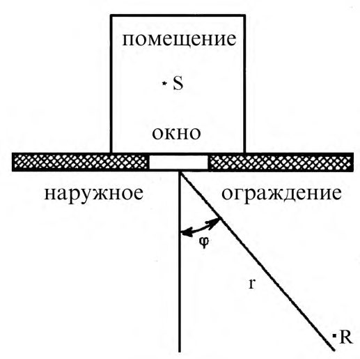
Рисунок 2 -Схема для определения угла между нормалью к наружному ограждению и направлением в расчетную точку
Изоляцию воздушного шума ограждением следует принимать по паспортным данным на ограждение или рассчитывать согласно [3]. Значения изоляции шума в октавных полосах частот по значениям изоляции, заданным в третьоктавных полосах частот, следует расчитывать по ГОСТ 27296-2012 (7.1.6).
Если ограждение состоит из нескольких частей с различной звукоизоляцией (например, стена с окном и дверью), R определяют по формуле
где S ок , R ок ; S дв , R дв ; S ст , R ст ; S ф - площадь, м² , и звукоизоляция, дБ, окон, дверей, сплошной части наружного ограждения (стены), открытой части форточки (фрамуги), соответственно.
При выполнении наружных ограждений из традиционных строительных материалов (кирпич, бетон и т.п. материалов, применяемых для отапливаемых помещений) R допускается определять по формуле (19) без учёта ст R ст S 0,1 10 - .
Звукоизоляцию окна с открытой форточкой или фрамугой принимают равной 10 дБ.
где 2м L - октавный уровень звукового давления на расстоянии 2 м от ограждения, дБ, (в случае проникновения шума из соседнего помещения определяют по формулам (13) или (17), в случае проникновения шума снаружи -по ГОСТ 31295.2).
R -изоляция воздушного шума ограждающей конструкцией, через которую проникает шум, дБ, определяемая по 6.5.5;
S - площадь ограждающей конструкции, м² ;
B и - акустическая постоянная изолируемого помещения, м² ;
В 0 и k - см. в формуле (8);
S 0=1 м² .
Эквивалентные октавные уровни звукового давления L экв, дБ, за время воздействия Т , мин, [соответствующее эффективной длительности Т е рабочей смены по ГОСТ 12.1.003-2014 (3.2.3)] следует определять по формуле
где j -время воздействия уровня j L , мин; j L -октавный уровень звукового давления в течение времеени j , дБ;
N -число интервалов, на которые разбито время воздействия Т.
где 𝐿𝑖 - октавный уровень звукового давления в iй октавной полосе частот, дБ;
𝐴𝑖 -значение частотной характеристики А шумомера на среднегеометрической частоте ( 𝑓 сг ) iй октавной полосы, дБ, принимаемое по таблице 9 согласно ГОСТ 17187.
Таблица 9 - Частотная характеристика А шумомера
| 𝑓 сг , Гц | 63 | 125 | 250 | 500 | 1000 | 2000 | 4000 | 8000 |
|---|---|---|---|---|---|---|---|---|
| 𝐴 𝑖 , дБ | -26,2 | -16,1 | -8,6 | -3,2 | 0 | +1,2 | +1,0 | -1,1 |
Эквивалентные уровни звука A непостоянного прерывистого шума, дБ А , следует определять по формуле (21), заменяя L экв на LA экв и j L на Aj L .
где 2м A L -эквивалентный (максимальный) уровень звука снаружи в двух метрах от ограждения, дБ А ;
RA тран.о -изоляция транспортного шума окном, дБ А ;
S о -площадь окна (окон), м² ;
B и -акустическая постоянная помещения, м² , в октавной полосе 500 Гц;
S 0 , B 0 , k -см. в формуле (20).
Звукоизоляцию окна с открытой форточкой или фрамугой принимают равной 10 дБ А ( RA тран.о = 10 дБ А ) .
.
где L - ожидаемый октавный уровень звукового давления (эквивалентный октавный уровень звукового давления), дБ, уровень звука А (эквивалентный уровень звука А ), дБ А , в расчетной точке, определенный по 6.5.1 - 6.5.8 для номинального рабочего дня, характеризующегося эффективной длительностью T е .
6.6Определение требуемого снижения уровней шума
где L - октавный уровень звукового давления, дБ; или уровень звука А , дБ А , рассчитанные в расчетной точке по 6.5;
𝐿 доп - предельно допустимый октавный уровень звукового давления, дБ, или уровень звука, дБ А , определенные в расчетной точке по 6.3.
где 𝐿𝑖 - октавный уровень звукового давления, дБ; или уровень звука А , дБ А , от iго источника, определенный в расчетной точке по 6.5; n - общее число источников шума, учитываемых при расчете суммарного шума в расчетной точке;
СП 254.1325800.2016
7Выбор мероприятий для обеспечения требуемого снижения шума
При проектировании промышленных комплексов не следует размещать объекты, требующие защиты от шума (лабораторно-конструкторские корпуса, вычислительные центры административных и тому подобных зданий), в непосредственной близости от шумных помещений (испытательных боксов авиационных двигателей, газотурбинных установок, компрессорных станций и т.п.). Наиболее шумные объекты рекомендуется компоновать в отдельные комплексы.
7.2. При планировании помещений внутри зданий нужно предусматривать максимально возможное удаление тихих и малошумных помещений от помещений с интенсивными источниками шума.
- б) установка звукоизолирующих кожухов, акустических экранов и выгородок;
- в) нанесение вибродемпфирующих покрытий на вибрирующие поверхности;
- г) устройство звукопоглощающих облицовок потолка и стен или установка штучных звукопоглотителей;
- д) устройство звукоизолированных кабин и зон отдыха для обслуживающего персонала.
- Необходимой звукоизоляцией должны быть обеспечены помещения, организационно принадлежащие к рассматриваемому производственному участку (помещение мастера, кладовые, конторы и т. п.).
- а) материалы и конструкции для перекрытий стен, перегородок, сплошных и остекленных дверей и окон, кабин наблюдения, обеспечивающие требуемую изоляцию воздушного шума; специальные двери и окна наблюдения с требуемой изоляцией воздушного шума между шумными и изолируемыми помещениями;
- б) звукопоглощающую облицовку потолка и стен или штучные звукопоглотители в шумном или изолируемом помещении;
- в) подвесные потолки и плавающий пол, виброизоляцию агрегатов, расположенных в том же здании;
- г) звукоизолирующие и вибродемпфирующие покрытия поверхностей трубопроводов, проходящих по помещению;
- д) глушители шума в системах вентиляции и кондиционирования воздуха с обеспечением звукоизоляции мест прохода технологических коммуникаций, связывающих шумное и изолируемое помещение.
8Определение требуемой звукоизоляции ограждающих конструкций зданий и элементов зданий
где 𝐿2 м - октавный уровень звукового давления, дБ, в расчетной точке, выбранной в помещении с источниками шума или на территории в двух метрах от рассматриваемой i -й ограждающей конструкции, через которую шум проникает в изолируемое помещение, определяемый по 6.5;
Si -общая площадь 𝑖 -й ограждающей конструкции (или отдельного элемента, например площадь глухой части стены, всех окон и т. д.), м² , через которую шум проникает в защищаемое помещение; 𝛼0 - средний коэффициент звукопоглощения поверхностей, в помещении, определяемый по 5.3.3;
𝑆п - площадь, м² , для соразмерных помещений, равная суммарной площади поверхностей в помещении S пом , для несоразмерных помещений принимается равной 10 H 2 , где H высота помещения, м;
𝐿 доп - предельно допустимый октавный уровень звукового давления, дБ, в защищаемом от шума помещении в расчетной точке, ближайшей к i -й ограждающей конструкции, определяемый по 6.3; 𝑚 -число ограждающих конструкций различных типов, через которые шум проникает в изолируемое помещение.
где 𝐿 𝑊 пр - октавный уровень звуковой мощности, дБ, шума, прошедшего через 𝑖 -ую ограждающую конструкцию из помещения с источниками шума, определяемый по формуле (18);
10lg𝛷 - поправка на направленность излучения, дБ, определяемая по таблице 8;
A - затухание в октавной полосе частот на пути распространения звука от 𝑖 -й ограждающей конструкции до ближайшей к ней расчетной точке на территории, определяемое по ГОСТ 31295.2-2005 (раздел 7);
𝐿 доп - предельно допустимый октавный уровень звукового давления, дБ, на территории в расчетной точке, ближайшей к i -й ограждающей конструкции, определяемый по 6.3; m - см. в формуле (27).
9Снижение шума звукоизолирующими кабинами
9.1Общие положения
Преимущество применения звукоизолирующих кабин - возможность обеспечения практически любого требуемого снижения шума на рабочих местах.
Оконные проемы следует делать минимальными и заполнять толстыми зеркальными стеклами или пластинами, например из плексигласа. По периметру окон должны быть предусмотрены герметичные резиновые прокладки.
При применении двойного остекления между стеклами должна быть сделана звукопоглощающая облицовка по периметру окон.
Конструкцией дверей должна быть обеспечена легкость и простота их закрывания и открывания, плотность и герметичность притворов по всему ее периметру. При высокой требуемой звукоизоляции двери следует выполнять двойными.
9.2Определение требуемой изоляции воздушного шума кабиной
где
- октавный уровень звукового давления, дБ, в расчетной точке в помещении с источниками шума на предполагаемом месте установки кабины, измеренный в действующем цехе или рассчитанный по 6.5;
𝐵 и - акустическая постоянная помещения кабины, м² , определяемая по 5.3.6,
𝑆𝑖 - площадь ограждения кабины (или его элемента), через которое шум проникает в кабину, м² ;
𝐿 доп - предельно допустимый октавный уровень звукового давления, дБ, в расчетной точке в кабине, определяемый по 6.3; т - общее число различных по изоляции элементов ограждений кабины, через которые шум проникает в кабину (стена, перекрытие, окно, дверь и т. п.).
где 𝐿 и 𝐿 доп - см. в формуле (29).
где , 𝑆 𝑖 , 𝑅 𝑖 - значения площади, м² , и изоляции воздушного шума отдельными элементами ограждения кабины, дБ, соответственно;
𝐵и и т - см. в формуле (29).
Необходимые и достаточные по звукоизоляции ограждающих конструкций кабины подбирают по значениям звукоизоляции от воздушного шума по ГОСТ Р 56235 или справочным данным [4], [5] заявляемым изготовителями ограждений, окон и дверей.
Спроектированная кабина должна удовлетворять требованию 𝑅каб ≥ 𝑅каб.тр .
10Снижение шума звукоизолирующими кожухами
10.1Общие положения
10.2Определение требуемой звукоизоляции кожуха
где 𝐿 -октавный уровень звукового давления в расчетной точке от одиночно работающей изолируемой машины, дБ, определяемый по 6.5.1;
𝐿 доп -предельно допустимый октавный уровень звукового давления в расчетной точке, дБ, определяемый по 6.3.
10.3Определение требуемой звукоизоляции стенок кожуха и выбор конструкции элементов кожуха
где 𝑅кож.тр -требуемая звукоизоляция кожуха, дБ , определяемая по 10.2.2; α обл -коэффициент звукопоглощения облицовки, определяемый по сопроводительной документации или справочным данным; б) для необлицованных кожухов
где 𝑆 кож - площадь поверхности кожуха, м² ;
𝑆 ист -площадь воображаемой поверхности, вплотную окружающей источник шума, м² .
Обе поверхности показаны на рисунке 3 (позиции 2 и 4).
1 - источник шума; 2 - кожух; 3 - воображаемая поверхность площадью S 0, проходящая через расчетную точку; 4 - воображаемая поверхность площадью S ист, вплотную окружающая источник шума Рисунок 3 - Схема расположения источника шума, кожуха и расчетной точки
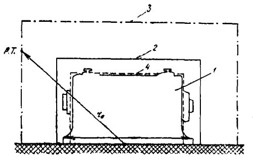
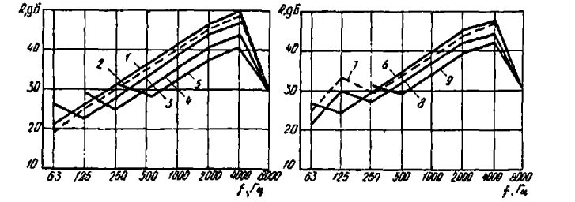
;
1 - 4x4 м² ; 2 - 3х3 м² ; 3 - 2х2 м² ; 4 - 1х1 м² ; 5 - 0,5х0,5 м² ; 6 - 4х2 м² 7 - 3х1,5 м² ; 8 - 2х1,0 м² ; 9 - 1х0,5 м²
Рисунок 4 - Звукоизоляция пластины из стали толщиной от 1,5 до 2,0 мм разных размеров
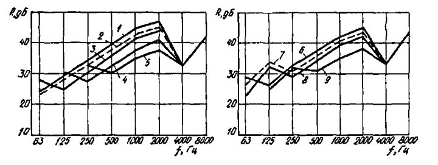
;
1 - 4x4 м² ; 2 - 3х3 м² ; 3 - 2х2 м² ; 4 - 1х1 м² ; 5 - 0,5х0,5 м² ; 6 - 4х2 м² 7 - 3х1,5 м² ; 8 - 2х1 м² ; 9 - 1х0,5 м²
Рисунок 5 - Звукоизоляция пластины из стали толщиной от 3 до 4 мм разных размеров
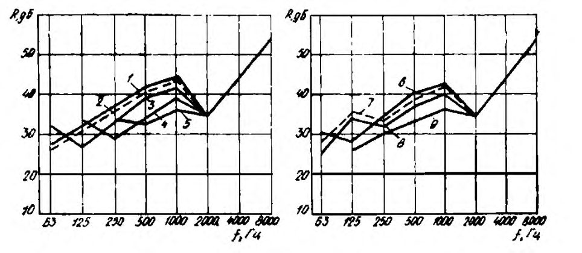
;
1 - 4x4 м² ; 2 - 3х3 м² ; 3 - 2х2 м² ; 4 - 1х1 м² ; 5 - 0,5х0,5 м² ; 6 - 4х2 м² 7 - 3х1,5 м² ; 8 - 2х1 м² ; 9 - 1х0,5 м²
Рисунок 6 - Звукоизоляция пластины из стали толщиной от 5 до 6 мм разных размеров
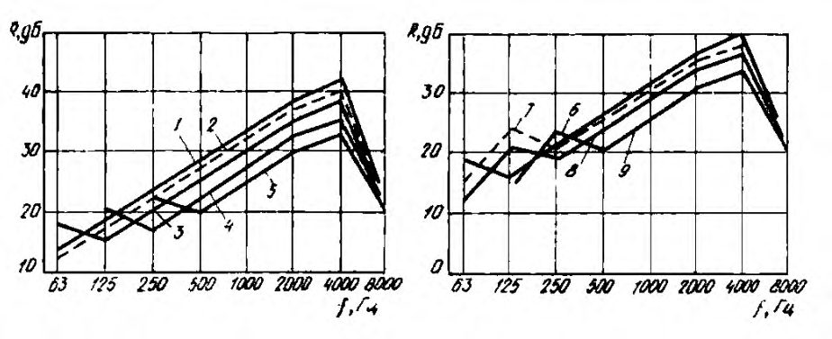
;
1 - 4x4 м² ; 2 - 3х3 м² ; 3 - 2х2 м² ; 4 - 1х1 м² ; 5 - 0,5х0,5 м² ; 6 - 4х2 м² 7 - 3х1,5 м² ; 8 - 2х1 м² ; 9 - 1х0,5 м²
Рисунок 7 - Звукоизоляция пластин из алюминиево-магниевых сплавов толщиной от 1,5 до 3 мм разных размеров
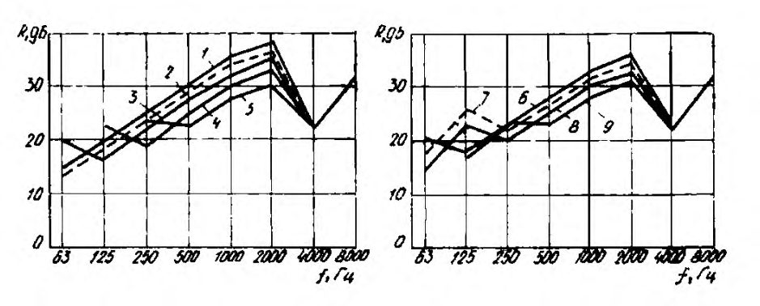
;
1 - 4x4 м² ; 2 - 3х3 м² ; 3 - 2х2 м² ; 4 - 1х1 м² ; 5 - 0,5х0,5 м² ; 6 - 4х2 м² 7 - 3х1,5 м² ; 8 - 2х1 м² ; 9 - 1х0,5 м²
Рисунок 8 - Звукоизоляция пластин из алюминиево-магниевых сплавов толщиной от 3 до 4 мм разных размеров
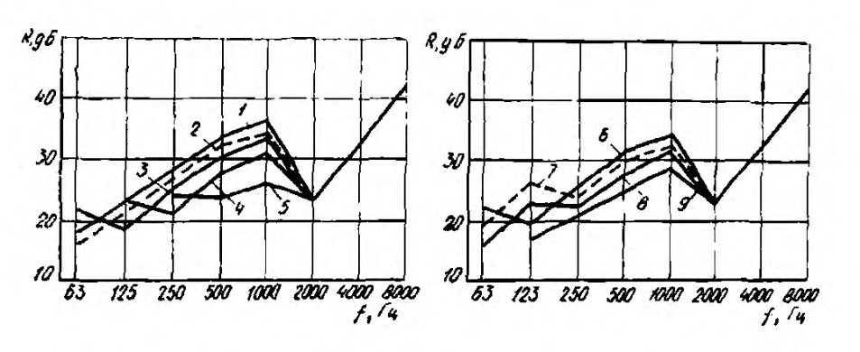
;
1 - 4x4 м² ; 2 - 3х3 м² ; 3 - 2х2 м² ; 4 - 1х1 м² ; 5 - 0,5х0,5 м² ; 6 - 4х2 м² 7 - 3х1,5 м² ; 8 - 2х1 м² ; 9 - 1х0,5 м²
Рисунок 9 - Звукоизоляция пластин из алюминиево-магниевых сплавов толщиной от 5 до 6 мм разных размеров
1 - 4x4 м² ; 2 - 3х3 м² ; 3 - 2х2 м² ; 4 - 1х1 м² ; 5 - 0,5х0,5 м² ; 6 - 4х2 м² 7 - 3х1,5 м² ; 8 - 2х1 м² ; 9 - 1х0,5 м²
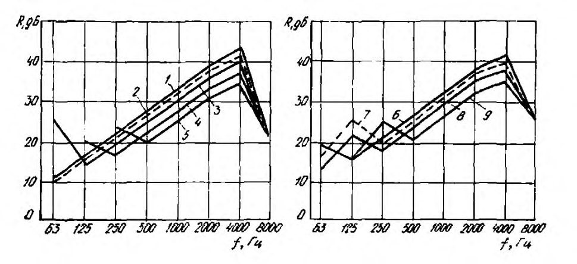
;
1 - 4x4 м² ; 2 - 3х3 м² ; 3 - 2х2 м² ; 4 - 1х1 м² ; 5 - 0,5х0,5 м² ; 6 - 4х2 м² 7 - 3х1,5 м² ; 8 - 2х1 м² ; 9 - 1х0,5 м²
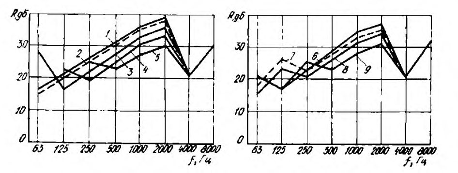
Рисунок 10 - Звукоизоляция пластин из органического стекла толщиной от 3 мм до 4 мм разных размеров
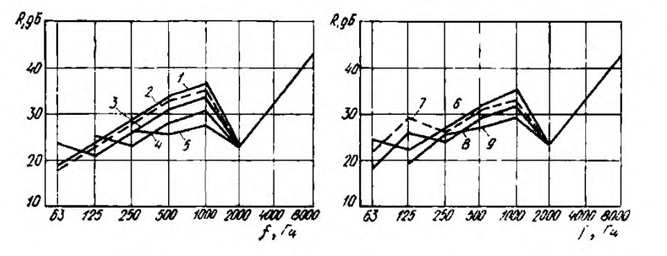
;
1 - 4x4 м² ; 2 - 3х3 м² ; 3 - 2х2 м² ; 4 - 1х1 м² ; 5 - 0,5х0,5 м² ; 6 - 4х2 м² 7 - 3х1,5 м² ; 8 - 2х1 м² ; 9 - 1х0,5 м²
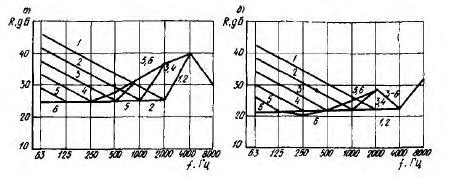
Рисунок 11 - Звукоизоляция пластин из органического стекла толщиной от 5 до 6 мм разных размеров
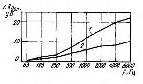
;
Рисунок 12 - Звукоизоляция пластин из органического стекла толщиной от 12 до 15 мм разных размеров
Если кожух имеет форму полуцилиндра, то звукоизоляцию его стенки следует определять по графикам на рисунке 13 для цилиндрических кожухов, используя для полуцилиндра диаметром D кривую звукоизоляции для цилиндра диаметром 1,5 D).
Рисунок 13 - Звукоизоляция цилиндрической стенки кожуха из стали при толщине стенки 1,5 м (а) и 3,0 мм (б) и диаметре цилиндра от 0,6 до 5,0 м
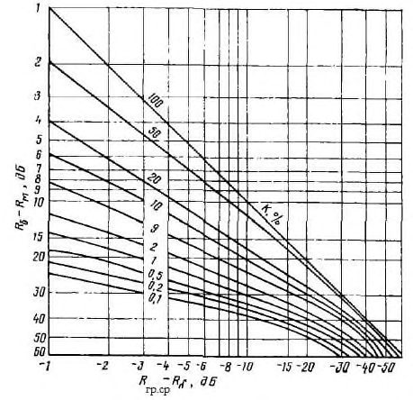
Если максимальный размер грани кожуха 1 м < 𝑎 <2 м, применяют промежуточные значения Δ R доп из того же графика.
Примечание - Для цилиндрического и полуцилиндрического кожухов за размер 𝑎 принимают максимальный размер развертки боковой поверхности кожуха.
Рисунок 14 -Дополнительная звукоизоляция слоя звукопоглощающего материала для максимальных размеров стенки не менее 2 м ( 1 ) и не более 1 м ( 2 )
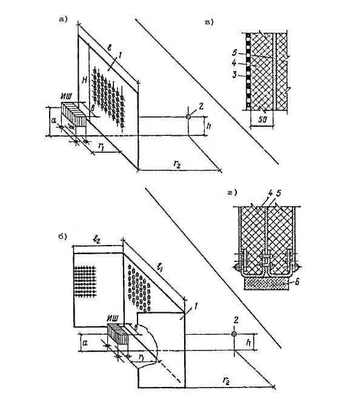
где 𝑆𝑖 , 𝑅𝑖 , -соответственно площадь, м² , и звукоизоляция, дБ, рассматриваемого элемента; т -общее число элементов грани с разной звукоизоляцией.
Примечание - При проектировании кожуха с окном или дверью звукоизоляцию всех его граней следует выбирать немного большей, чем R r.тр, причем дверь и окно рекомендуется размещать в разных гранях.
Конструкция окна подбирается по рисункам 10 - 12.
Рисунок 15 -Номограмма для определения средней звукоизоляции неоднородных ограждений
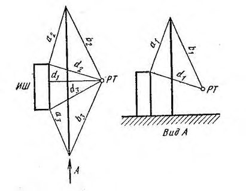
Глушители можно подбирать по таблице 10. Ширина щели h в таких глушителях должна быть 20-40 мм при двухсторонней и 10-20 мм при одностороннем облицовке щели. Толщина облицовки H = 50 мм.
Таблица 10 - Эффективность глушителей, дБ, в зависимости от их длины, м, (наполнитель - волокно супертонкое стеклянное 𝜌 ср = 25 кг/м³ или базальтовое 𝜌 ср = 20 кг/м³ )
| Тип | Ширина | Пло- щадь ного | Длина м | Эффективность глушителя, дБ, для октавной полосы со среднегеометрической частотой, Гц | Эффективность глушителя, дБ, для октавной полосы со среднегеометрической частотой, Гц | Эффективность глушителя, дБ, для октавной полосы со среднегеометрической частотой, Гц | Эффективность глушителя, дБ, для октавной полосы со среднегеометрической частотой, Гц | Эффективность глушителя, дБ, для октавной полосы со среднегеометрической частотой, Гц | Эффективность глушителя, дБ, для октавной полосы со среднегеометрической частотой, Гц | Эффективность глушителя, дБ, для октавной полосы со среднегеометрической частотой, Гц | Эффективность глушителя, дБ, для октавной полосы со среднегеометрической частотой, Гц |
|---|---|---|---|---|---|---|---|---|---|---|---|
| глушителя | щели, мм | свобод- сече- ния, м² | 63 | 125 | 250 | 500 | 1000 | 2000 | 4000 | 8000 | |
| Кольцевые и щелевые глушители с двухсторон- ней облицовкой | 40 | 0,035 | 0,25 0,5 0,75 1 | 15 18 20 23 | 13 18 22 26 | 13 20 27 35 | 14 25 36 45 | 17 33 45 45 | 19 38 45 45 | 20 40 45 45 | 17 34 40 40 |
| Кольцевые и щелевые глушители с двухсторон- ней облицовкой | 30 | 0,022 | 0,25 0,5 0,75 1 | 17 20 22 25 | 16 22 27 32 | 15 24 33 40 | 17 31 45 45 | 19 40 45 45 | 24 45 45 45 | 26 45 45 45 | 25 45 45 45 |
| Кольцевые и щелевые глушители с двухсторон- ней облицовкой | 20 | 0,015 | 0,25 0,5 0,75 1 | 19 22 26 30 | 20 29 38 40 | 19 32 40 40 | 21 38 45 45 | 26 45 45 45 | 32 45 45 45 | 38 45 45 45 | 40 40 40 40 |
| Кольцевые глушители с односторон- ней облицовкой | 20 | Не более 0,015 | 0,25 0,5 0,75 1 | 15 18 20 23 | 13 18 22 26 | 13 20 27 35 | 14 25 36 45 | 17 33 45 45 | 19 38 45 45 | 20 40 45 45 | 17 34 40 40 |
| Кольцевые глушители с односторон- ней облицовкой | 10 | Не более 0,01 | 0,25 0,5 0,75 1 | 19 22 26 30 | 20 29 38 40 | 19 32 40 40 | 21 38 45 45 | 26 45 45 45 | 32 45 45 45 | 38 45 45 45 | 40 40 40 40 |
Примечание -Площадь свободного (проходного) сечения глушителя может быть увеличена за счет увеличения ширины щели, но не более чем в два раза и при соответствующем удлинении щели или увеличения числа щелей или колец (размещенных параллельно друг другу).
где 𝑅 ог . ср -проектная средняя звукоизоляция ограждающих поверхностей кожуха, дБ ;
𝑅𝑖 -расчетное значение звукоизоляции грани, дБ, с площадью 𝑆𝑖 , м² (для граней неоднородной конструкции вместо Ri берется значение R г.сp , определяемое по формуле (33) или рисунку 15); т -общее число граней кожуха; αобл , 𝑆кож , и 𝑆 ист -см. в формуле (33) или (34).
Вибродемпфирующая мастика может наноситься снаружи или изнутри кожуха. Нанесение мастики увеличивает звукоизоляцию кожуха в среднем на 5-15 дБ в нормируемом диапазоне частот.
11Снижение шума звукопоглощающими облицовками и конструкциями
11.1Общие положения
11.2Определение снижения уровней шума в расчетных точках
где 𝑄 = 𝑎 отр 𝑎 пр / -акустическое отношение соответствующее отношению плотностей энергии отраженного звука и прямого звука в расчетной точке.
где 𝐿 - октавный уровень звукового давления, дБ, в выбранной расчетной точке помещения без звукопоглощающих конструкций, определяемый по 6.5;
𝐿 обл - октавный уровень звукового давления, дБ, в выбранной расчетной точке помещения, определяемый по тем же формулам с применением 𝑎 отр . обл .𝑖 , рассчитываемого по 5.4.2 с определением среднего коэффициента звукопоглощения 𝛼 ср . обл по 5.3.5 и среднего коэффициента звукопоглощения поверхностей помещения 𝛼 0 по формуле
где 𝛼 обл -реверберационный коэффициент звукопоглощения звукопоглощающей конструкции площадью 𝑆 обл , м² , принимаемый по 11.1.4; 𝛼 обл . экр .𝑖 -реверберационный коэффициент звукопоглощения поверхности i -го акустического экрана с площадью облицованной звукопоглощающим материалом поверхности 𝑆 экр .𝑖 , м² ; m - число акустических экранов, установленных в помещении; 𝛼0 , 𝑆 пом , Аj и k -см. в формуле (3).
12Снижение шума акустическими экранами
12.1Общие положения
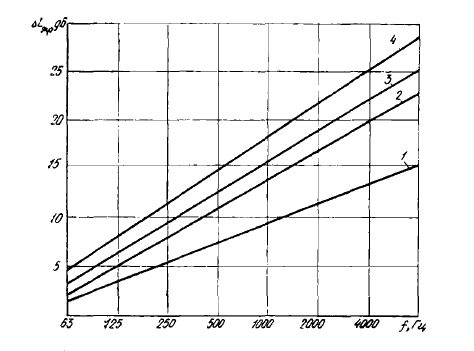
ИШ - источник шума; 1 - экран; 2 - расчетная точка; 3 - перфорированный лист; 4 - звукопоглотитель; 5 - сталь 2 мм; 6 - резиновая прокладка
Рисунок 16 - Формы и конструкции акустических экранов
Линейные размеры экрана должны быть не менее чем в три раза больше линейных размеров источников шума. Предпочтительнее экраны П-образной формы.
12.2Определение акустической эффективности экрана
где ∆𝐿 экр .1 -акустическая эффективность экрана бесконечной протяженности в плане, дБ;
∆𝐿 экр .2 и ∆𝐿 экр .3 -акустические эффективности экранов бесконечной высоты, проходящих через боковые ребра рассматриваемого экрана перпендикулярно к его поверхности, дБ.
Акустические эффективности ∆𝐿 экр .1 , ∆𝐿 экр .2 и ∆𝐿 экр .3 определяют в зависимости от разностей хода звуковых лучей от поверхности источника шума до расчетной точки в присутствии и отсутствии экрана 𝛿𝑖 = 𝑎𝑖 +𝑏𝑖 - 𝑑𝑖 , ( 𝑖 = 1, 2, 3), м, показанной на рисунке 17, и среднегеометрической частоты октавной полосы f сг, Гц, по формуле
Если 𝑖𝑓 ≥ 180 м/с расчет можно выполнять по упрощенной формуле
Рисунок 17 -Схема расположения экрана между расчетной точкой (РТ) и источником шума (ИШ)
Для П-образного экрана соответствующие значения приведены в таблице 12.
Усредненные значения ∆𝐿 экр , дБ, для каждой октавной полосы при расстоянии 𝑟 2 от экрана до расчетной точки не более 3 м допускается определять по графику на рисунке 18. При этом для экрана П-образной формы в качестве длины экрана 𝑙 , м, следует принимать приведенную длину 𝑙 прив = 𝑙1 +2𝑙2 .
В случаях, когда размеры экрана и координаты расчетной точки отличаются от приведенных в таблицах 11 и 12 и на рисунке 18, ∆𝐿 экр , дБ, их следует определять расчетным путем по 12.2.1.
Таблица 11 - Акустическая эффективность плоского экрана
| Размеры экрана и координаты расчетной точки, м (рисунок 16) | Размеры экрана и координаты расчетной точки, м (рисунок 16) | Размеры экрана и координаты расчетной точки, м (рисунок 16) | Размеры экрана и координаты расчетной точки, м (рисунок 16) | Акустическая эффективность экрана Δ L экр , дБ, в октавной полосе со среднегеометрической частотой, Гц | Акустическая эффективность экрана Δ L экр , дБ, в октавной полосе со среднегеометрической частотой, Гц | Акустическая эффективность экрана Δ L экр , дБ, в октавной полосе со среднегеометрической частотой, Гц | Акустическая эффективность экрана Δ L экр , дБ, в октавной полосе со среднегеометрической частотой, Гц | Акустическая эффективность экрана Δ L экр , дБ, в октавной полосе со среднегеометрической частотой, Гц | Акустическая эффективность экрана Δ L экр , дБ, в октавной полосе со среднегеометрической частотой, Гц | Акустическая эффективность экрана Δ L экр , дБ, в октавной полосе со среднегеометрической частотой, Гц | Акустическая эффективность экрана Δ L экр , дБ, в октавной полосе со среднегеометрической частотой, Гц |
|---|---|---|---|---|---|---|---|---|---|---|---|
| H | h | l | r 2 | 63 | 125 | 250 | 500 | 1000 | 2000 | 4000 | 8000 |
| 2,4 | 1,2 | 1 | 1 2 | 0 0 0 | 0 0 0 | 5 4 3,5 | 7 6 5,5 | 8,5 8 6,5 | 9 8,5 8 | 11,5 12 11 | 15 13,5 13 |
| 2,4 | 1,2 | 1,5 | 3 1 2 3 | 0 0,5 1,5 | 0 0,5 1,5 | 9 9,5 7 | 10 8,5 8 | 10 10 9,5 | 14 12 11,5 | 17 15,5 15 | 19 18,5 17 |
| 2,4 | 1,2 | 3,5 | 1 2 3 | 5 4,5 4 | 5 5,5 6 11 | 9 10 9 13,5 | 14,5 12 9.5 | 17,5 16,5 14 | 16,5 17.5 15 | 22 22 19,5 | 23 23,5 22 16 |
| 2,4 | 1,2 | 3,5 | 1 2 3 | 8 8 6 | 10 10 | 9,5 7 | 10 7,5 5,5 | 10,5 10,5 8,5 | 12 12 12 | 14 14 13,5 | 15,5 15 |
| 1,5 | 0,75 | 1,75 | 1 2 | 2 1 | 1 0 | 6 5,5 | 10 7,5 | 10,5 10,5 | 12 12 | 14 14 | 16 15,5 15 |
| 3 | 1,5 | 0 6 | 7 9 | 5,5 14 | 8,5 | 12 16 | 13,5 | ||||
| 1,5 | 0,75 | 3,25 | 1 2 3 | 6 5,5 5,5 | 3 1,5 | 7,5 8,5 | 9 9 | 17 14 11,5 | 15,5 15 | 19 19 18 | 21 20 20 |
| 1,5 | 0,75 | 4,75 | 1 2 3 | 6,5 6,5 6,5 | 6,5 3 0.5 | 10,5 11 12 | 12 12 12,5 | 18 16,5 14,5 | 20 17 16,5 | 22 20,5 20,5 | 24 23,5 22,5 |
| 1 | 0,5 | 2,4 | 1 2 3 | 3 2 1,5 | 0 0 0 | 3,5 3 0 | 9 10 10 | 9,5 9 8,5 | 11,5 10 10 | 14 13 13,5 | 17 15,5 14 |
| 1 | 4 | 5 4 | 10 | 12,5 | 14,5 | 15,5 | 19,5 | 23 | |||
| 2 | 1 | 2,4 | 2 3 | 4 4 | 3,5 | 8 7,5 | 10,5 9,5 | 14,5 12,5 | 15,5 15,5 | 18,5 18,5 | 22 20 |
Таблица 12 - Акустическая эффективность П-образного экрана
| Размеры экрана и координаты расчетной точки, м | Размеры экрана и координаты расчетной точки, м | Размеры экрана и координаты расчетной точки, м | Размеры экрана и координаты расчетной точки, м | Размеры экрана и координаты расчетной точки, м | Акустическая эффективность экрана Δ L экр , дБ, в октавной полосе со среднегеометрической частотой, Гц | Акустическая эффективность экрана Δ L экр , дБ, в октавной полосе со среднегеометрической частотой, Гц | Акустическая эффективность экрана Δ L экр , дБ, в октавной полосе со среднегеометрической частотой, Гц | Акустическая эффективность экрана Δ L экр , дБ, в октавной полосе со среднегеометрической частотой, Гц | Акустическая эффективность экрана Δ L экр , дБ, в октавной полосе со среднегеометрической частотой, Гц | Акустическая эффективность экрана Δ L экр , дБ, в октавной полосе со среднегеометрической частотой, Гц | Акустическая эффективность экрана Δ L экр , дБ, в октавной полосе со среднегеометрической частотой, Гц | Акустическая эффективность экрана Δ L экр , дБ, в октавной полосе со среднегеометрической частотой, Гц |
|---|---|---|---|---|---|---|---|---|---|---|---|---|
| H | 𝑙 1 | 𝑙 2 | h | 𝑟 2 | 63 | 125 | 250 | 500 | 1000 | 2000 | 4000 | 8000 |
| 1,5 | 0,75 | 1,5 | 0,75 | 1 2 3 | 8,5 9 7 | 6,5 4 2,5 | 13 11 13,5 | 14,5 11,5 11,5 | 19 18,5 18,5 | 19,5 17 17 | 24 21,5 19 | 25 22,5 21,5 |
| 1,5 | 0,75 | 1,5 | 1 | 1 2 3 | 6,5 7 7 | 7 5 3,5 | 12 9 9,5 | 15 13,5 10 | 18 17 16 | 18 17 16,5 | 22,5 21 20 | 22,5 21 20 |
| 2,4 | 2 | 1,5 | 1,2 | 1 2 3 | 6, 8 4 | 7,5 7 7 | 10,5 9,5 9 | 17,5 17 15 | 21,5 21 20 | 22,5 21,6 20,5 | 27 25,5 24,5 | 27,5 25 24 |
Рисунок 18 - Усредненные значения акустической эффективности экрана L экр
12.3Определение снижения уровней шума в расчетных точках
где 𝐿 - октавный уровень звукового давления, дБ, в расчетной точке помещения без звукопоглощающих конструкций и без экранов, определяемый по 6.5;
𝐿 экр - октавный уровень звукового давления, дБ, в той же расчетной точке помещения после установки в помещении звукопоглощающих конструкций (облицовки) и экранов, определяемый по формуле
где 𝑎 пр 𝑖 - коэффициент, характеризующий вклад прямого звука в расчетной точке от 𝑖 -го источника, определяемый по 5.2.3;
𝐿𝑊𝑖 -октавный уровень звуковой мощности i -го источника шума, дБ;
∆𝐿 экр ,𝑖 -акустическая эффективность экрана, дБ, отделяющего расчетную точку от i -го источника; 𝑎 отр . обл .𝑖 - коэффициент, характеризующий вклад отраженного звука в расчетной точке от i -го источника с учетом наличия в помещении звукопоглощающей конструкции, определяемый, также, как в 11.2.2.
Библиография
- [1] СН 2.2.4/2.1.8.562-96 Шум на рабочих местах, в помещениях жилых, общественных зданий и на территории жилой застройки
- [2] Р 2.2.2006-05 Руководство по гигиенической оценке факторов рабочей среды и трудового процесса. Критерии и классификация условий труда
- [3] СП 23-103-2003 Проектирование звукоизоляции ограждающих конструкций жилых и общественных зданий
- [4] Справочник проектировщика. Защита от шума. Под ред. Е.Я Юдина. М.: Стройиздат, 1974, 134 с.
- [5] Альбом типовых инженерных решений тонких звукоизолирующих конструкций, М.: НИИСФ РААСН, 2014, 87 с.